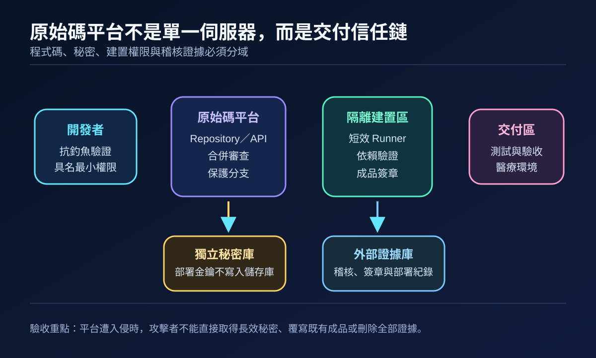
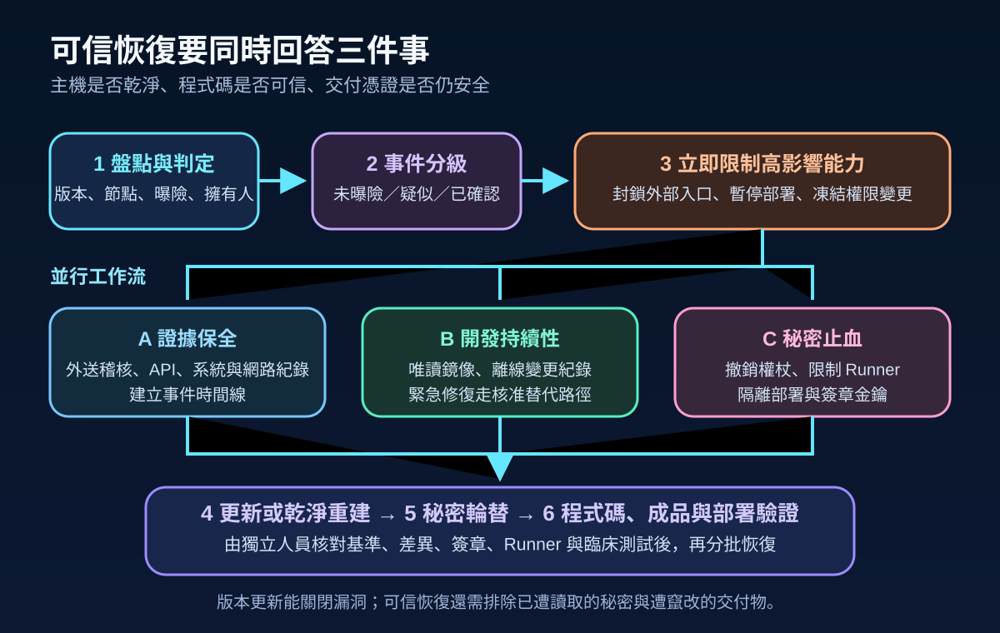
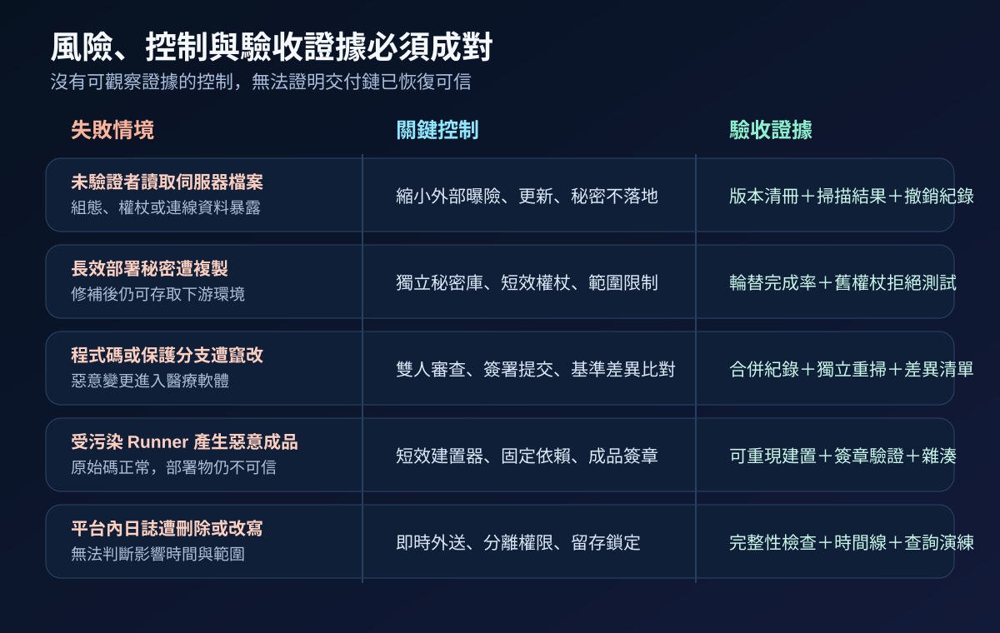

醫療資安國際觀察 · 2026-09-16
醫療原始碼平台遭利用後如何恢復可信：從秘密輪替到交付驗證
作者：Dr. William｜醫療資訊與資安治理實務工作者
原始碼平台同時掌握程式碼、開發身分、建置流程與部署秘密。平台出現已知遭利用漏洞時，處置不能停在升級版本，還須確認秘密是否外洩、程式碼與成品是否遭改動，以及後續部署是否仍可信。
名詞解釋：從 Repository 到 CI/CD 信任鏈
Repository保存程式碼與變更歷程；CI/CD將提交內容自動建置、測試與交付；Runner是執行建置工作的運算環境；path traversal則是輸入路徑未被妥善限制，使請求越過預期目錄讀取其他檔案。若平台主機上的組態、權杖或連線資料可被讀取，風險可能沿著建置器與部署權限擴散至下游環境。
國際現況與適用邊界
GitLab 於 2026 年 9 月 10 日發布安全更新，說明 CVE-2026-85706 在特定條件下可讓未經驗證的使用者透過 repository commits API 讀取伺服器任意檔案；受影響範圍為 GitLab CE／EE 18.7 起至 19.1.8 之前、19.2 至 19.2.6 之前，以及 19.3 至 19.3.2 之前的版本。官方表示 GitLab.com 已更新，GitLab Dedicated 客戶不需採取行動，自管環境應升級至修正版。CISA 於 9 月 11 日把該漏洞加入 KEV，標示已有遭利用證據，並要求納入鑑識分流。
法域與產品邊界：CISA 的 2026 年 9 月 14 日期限及 BOD 26-04 義務適用美國聯邦文職行政機關，不是台灣醫療機構的法定期限。GitLab 公告也不能推論所有雲端原始碼服務或其他產品受相同漏洞影響。台灣機構應依部署模式、實際版本、外部曝險、秘密存放方式與醫療軟體影響決定處置。
規劃：先建立平台、秘密與交付物清冊
範圍應涵蓋自管節點、備援與測試實例、外部入口、API、身分來源、Runner、套件庫、Webhooks、部署權杖、簽章金鑰及下游環境。平台擁有人確認版本與維護窗口；資安單位判定曝險並保存證據；開發團隊核對程式碼與依賴；DevOps 團隊限制建置及部署；醫療系統擁有人確認緊急修復與臨床驗收需求。驗收指標可包含節點盤點率、外送日誌覆蓋率、秘密輪替完成率、未授權變更數、成品簽章驗證率及分批恢復成功率。

實作：限制高影響能力，再恢復交付
- 盤點與比對：確認所有節點、版本、部署模式、外部入口與 Runner，依 GitLab 公告辨識受影響版本，避免漏掉備援或測試實例。
- 保存證據：把 API、稽核、認證、系統與網路紀錄送往獨立權限域，建立可疑請求、權限變更、程式碼異動及部署事件時間線。
- 降低曝險：限制外部與管理入口，暫停非必要部署、權限變更及新權杖核發；疑似受影響的 Runner 與平台節點依事件程序隔離。
- 更新與重建：依供應商公告升級修正版。若完整性無法確認，從可信映像重建，不沿用舊主機、Runner 快取或未驗證的備份。
- 撤銷與輪替：依風險處理 API、部署、套件庫、Webhook、雲端與簽章秘密；先撤銷高權限及可跨環境使用的長效權杖。
- 驗證與恢復：從已知良好基準比對提交、分支、保護規則與套件，重新建置並驗證雜湊、簽章及臨床測試，再按低風險至高影響順序恢復部署。
風險：原始碼正常，不代表部署物可信
平台遭讀取後，最難排除的是已被複製的秘密；它可能在漏洞修補後繼續提供下游存取。受污染 Runner 也可能在不改動儲存庫內容的情況下產生惡意成品。若稽核紀錄只留在平台內，事件時間線還可能被刪除。控制設計需採短效權杖、獨立秘密庫、短生命週期建置器、保護分支、成品簽章與外部日誌，並保留緊急醫療修復的核准替代流程，避免全面停擺迫使人員繞過控制。

可執行清單
- 能否列出所有原始碼平台節點、版本、入口、Runner、秘密與服務擁有人？
- 部署秘密是否位於獨立秘密庫，並採短效、限範圍與可撤銷設計？
- 稽核、API、認證、系統與部署紀錄是否即時送往不同權限域？
- 疑似遭利用時，是否能先暫停高影響部署並保留緊急醫療修復路徑？
- 更新或重建後，是否完成權杖撤銷、秘密輪替與舊權杖拒絕測試？
- 恢復前是否獨立比對程式碼、依賴、Runner、成品雜湊、簽章及臨床測試？
來源
- CISA｜Known Exploited Vulnerabilities Catalog：CVE-2026-85706（加入：2026-09-11；查閱：2026-09-16）
- GitLab｜Critical Patch Release: 19.3.2, 19.2.6, 19.1.8（發布：2026-09-10；查閱：2026-09-16）
- NIST｜SP 800-204D: Strategies for the Integration of Software Supply Chain Security in DevSecOps CI/CD Pipelines（發布：2024-02；查閱：2026-09-16）
- CISA｜BOD 26-04 Implementation Guidance（發布：2026-06-10；更新：2026-08-25；查閱：2026-09-16）
內容說明
本文依健康台灣深耕計畫相關治理內容整理，並參考 CISA、GitLab 與 NIST 公開資料，提出台灣醫療機構可採用的原始碼平台事件處置與可信恢復方法；不取代主管機關公告、法律意見、供應商文件、事件鑑識或個案臨床風險判斷。